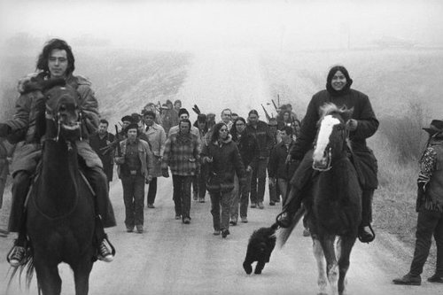

Italian-American actor Espera Oscar de Corti made a career of depicting Native Americans in movies and television as Iron Eyes Cody. In this ad, he plays a noble savage, saddened by pollution.
This ad was popular around the same time members of the American Indian Movement occupied Wounded Knee on the Pine Ridge Indian Reservation in South Dakota.